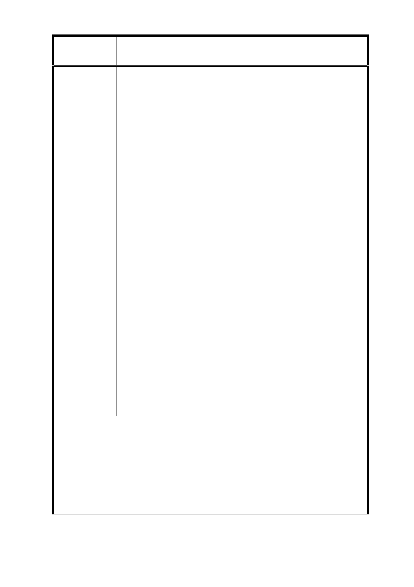

案
名
修訂臺北市信義計畫特定專用區細部計畫(第三次
通盤檢討)案（第二次公告公開展覽）
間之內容（下稱「增訂新舞臺事項」）。本公司為「增
訂新舞臺事項」中新舞臺及其座落基地之所有權
人，爰依法提出陳述意見如后。
二、 按「增訂新舞臺事項」修訂理由三記載，本項係源
於文化局於 103 年 7 月 21 日登錄新舞臺為文化景
觀（下稱「原處分」）；惟，上開原處分業經臺北市
政府訴願審議委員會於 104 年 5 月 8 日決定撤銷，
則本件「增訂新舞臺事項」已失所附麗。另，原處
分之訴願決定理由已明揭「文化景觀之立法意旨乃
屬低密度管制」之原則，自不得再課予本公司於新
舞臺所在基地維持原表演空間機能之積極責任，否
則即為侵害人民之財產權。據此，原處分既已因違
法而遭撤銷，則本件「增訂新舞臺事項」之內容，
擬以都市計畫之方式迂迴達成原處分擬「限制新舞
臺用途」之目的，亦顯有違法性疑慮。甚者，「增
訂新舞臺事項」所要求之無償捐贈、成立基金會、
推薦董事參與經營等節，亦逾越都市計畫之範疇，
而有違反依法行政之虞，故本件「增訂新舞臺事項」
應予撤銷。
三、 本公司興建或經營新舞臺純粹係自發性地支持公
益、贊助藝文、善盡企業社會責任，已持續付出達
18 年。承前所述，本公司雖無法律之義務維持新舞
臺，然仍願一本初衷，採自發性之態度及開放之立
場，願與臺北市政府透過協商方式共同興利，共創
多贏。
建 議 辦 法 如陳情理由。
本案新舞臺相關規定業經 104 年 3 月 5 日第 668 次都市計
市
說
府
回
應
明
畫委員會審議通過，故是否修訂或刪除該部分規定提請委
員會討論。
22